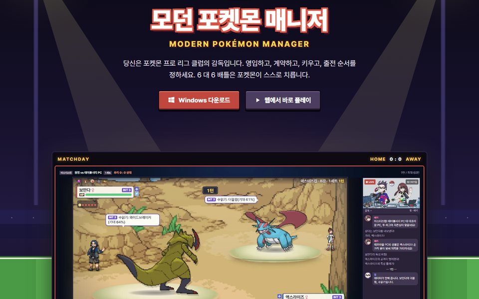
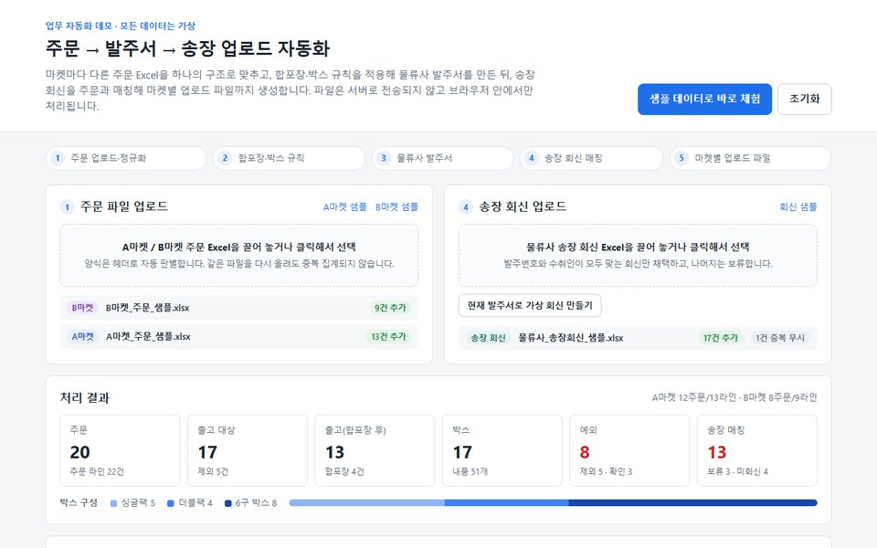

개인
주문·발주·송장 자동화 데모 공개
마켓별 주문 Excel 두 양식을 정규화해 발주서와 송장 업로드 파일까지 만드는 브라우저 전용 데모.
- JavaScript
- SheetJS
- 업무 자동화
콜센터 솔루션과 공공·금융·여행 고객사 콜 애플리케이션, 메르세데스-벤츠 코리아 등 브랜드 사이트의 프론트엔드를 4년 넘게 맡아 왔습니다. 최근에는 운영 WordPress에 Codex를 연결해 AI가 페이지 작성·검수를 하게 했고, Claude Code로 직접 기획한 게임을 만들어 운영하고 있습니다. "요구사항 → 구현 → 배포 → 운영"을 끝까지 맡는 것이 제 방식입니다.

운영 중개인 프로젝트 · 2026.10 – 운영 중
FM(축구 감독 게임)식 구단 경영과 포켓몬 6 대 6 자동 배틀을 결합한 비영리 팬게임. 기획부터 개발·배포·운영까지 AI 코딩 에이전트(Claude Code)로 혼자 진행했습니다.
modern-pokemon-manager.pages.dev

개인
마켓별 주문 Excel 두 양식을 정규화해 발주서와 송장 업로드 파일까지 만드는 브라우저 전용 데모.
개인
Claude Code로 18일간 커밋 829회. 역할별 AI 세션 협업 구조를 설계하고, 평균 동시접속 50명 이상으로 운영 중.
넥스트온 · 단독 납품
수작업 Excel 업무를 7개 운영 프로그램 패키지(Windows EXE)로 대체해 현장 PC에 배포. 고객사가 현업에서 사용 중.
문클리닉 · 단독 개발
관리자 UI·연결 상태·테스트 URL·비로그인 공개 페이지를 분리 검증하는 검수 체계와 PC 1280px·모바일 390px 검수 규칙 표준화.
문클리닉 · 단독 개발
재사용 패널 블록, 반응형 미리보기, Rich Text Editor, 4개 언어 독립 저장·버전 이력. 이미지형 페이지를 한·영·일·중 반응형 웹으로 마이그레이션.
문클리닉 · 단독 개발
Breeze·Varnish·Cloudflare 3단 캐시를 잇는 플러그인과 Cloud Run 지역별 워머. 서버 선정부터 Linux·DNS·SSL까지 직접 구축.
레몬아이티
화면 구성 변경과 기능 추가·수정.
레몬아이티
자사 콜센터 솔루션 '스마트온 클라우드'를 모두투어에 배포하는 프로젝트. 인덱스 서버(ELK) 개발 병행.
레몬아이티
메인 솔루션 스마트온 클라우드와 아이패드용 솔루션 제품의 프론트엔드 리뉴얼.
레몬아이티
Docker로 Elasticsearch를 자사 DB와 연동해 PDF 내용 검색을 활성화하고 Flask로 검색 API 구현.
레몬아이티
프론트 개발과 보안 취약점 대응을 위한 HTML 태그 차단·결함 수정.
레몬아이티
솔루션에 채팅 상담 화면이 필요한 상황에서 프론트 기획부터 개발까지.
네오엠씨
JavaScript로 사용자 위치 추적·거리 계산 기능 개발. 여러 관공서·지자체에 보급.
네오엠씨
알림톡, 검진 날짜 필터링, 대상자별 특수 검진 배정 DB 설계, PWA. 추가 개발 이후 여러 기업·병원과 제휴 협약 체결.
네오엠씨
회사 핵심 거래처 사이트 담당(Adobe CMS·WordPress). 2022년 대행사 교체 때 신규 대행사에 업무 프로세스 교육.
네오엠씨
사이니지 콘텐츠 웹 제어 서비스. 메르세데스-벤츠 트럭 판매 대리점에 기기 보급, 사내 다른 웹사이트에 기술 재사용.
프론트엔드·웹 개발, AI 도구를 활용한 개발·업무 자동화 포지션과 프로젝트 문의를 기다립니다.